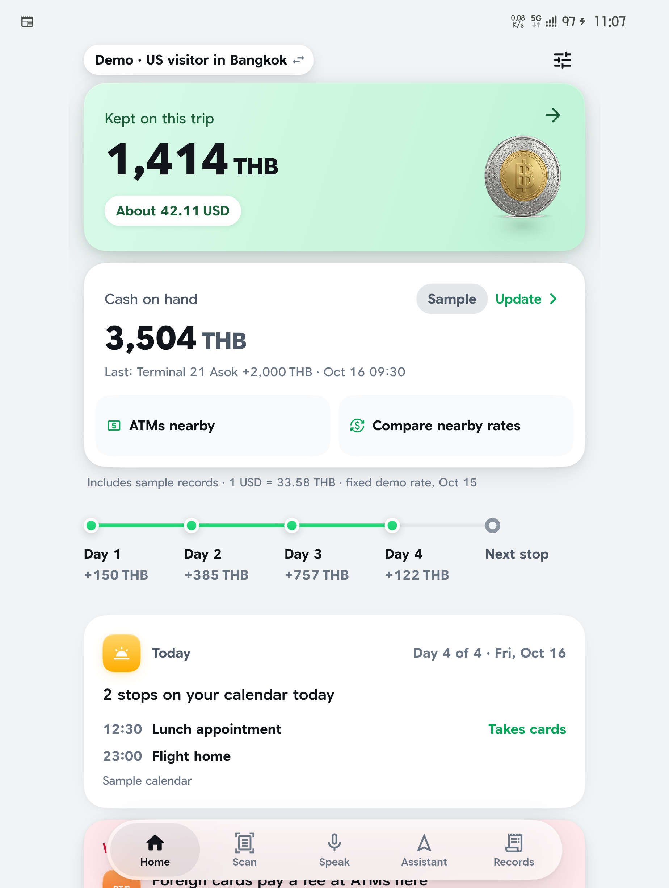

3 · The AI keeps count
Kept on this trip. Includes sample records.
Cash on hand updates itself:
ATM, cash haggles, cash bills. Not card payments.
Nearby ATMs with walking directions. Live exchange-counter rates near you
(ThaiRate, CC BY 4.0, refreshed every 15 minutes).
